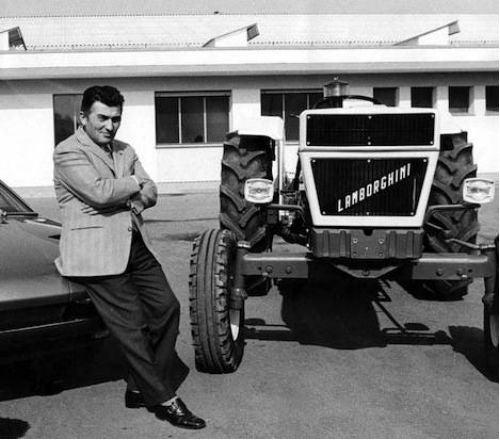
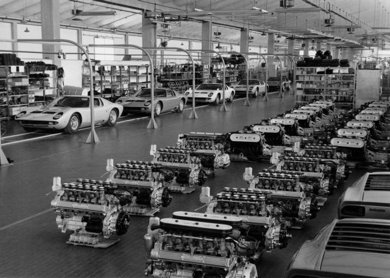
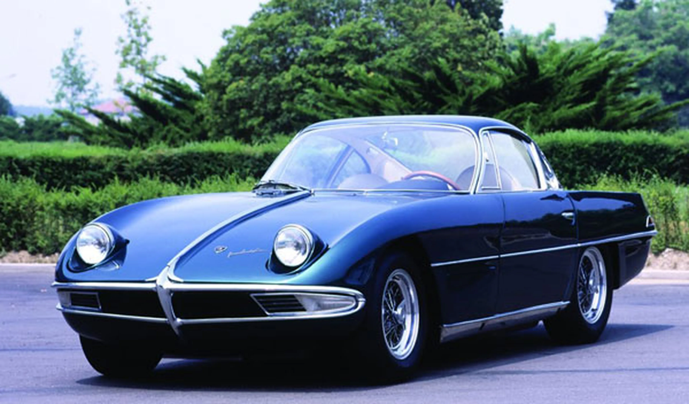

Fundación y primeros años (1963-1972)
{kind=link}
Lamborghini fue fundada en 1963 por Ferruccio Lamborghini en Sant'Agata Bolognese, Italia. Con el lanzamiento del Lamborghini 350 GT, el primer modelo de la marca, Lamborghini estableció su posición como fabricante de autos deportivos de lujo, rivalizando con Ferrari. Este período marcó los inicios de la empresa y su rápida evolución en la industria automotriz.
Crisis financiera y cambios de propiedad (1973-1987)
{kind=link}
A mediados de los años 70, Lamborghini enfrentó problemas financieros debido a la crisis del petróleo y la disminución de la demanda de autos deportivos. En 1974, Ferruccio Lamborghini vendió la empresa, que luego pasó por varias manos. A pesar de los desafíos, durante esta época nació el legendario Lamborghini Countach, que se convirtió en un icono automotriz y ayudó a mantener el interés en la marca.
Renacimiento y expansión (1988-1999):
{kind=link}
En 1987, Chrysler Corporation compró Lamborghini y aportó capital para revitalizar la marca. En 1990, lanzaron el Lamborghini Diablo, un modelo que marcó el renacimiento de la marca en los 90 y consolidó su imagen de lujo y potencia. En 1998, Lamborghini fue adquirida por el Grupo Volkswagen a través de Audi, lo cual impulsó la modernización de su tecnología y procesos de fabricación.
Innovación y sostenibilidad (2000-presente)

Bajo el liderazgo de Audi, Lamborghini ha experimentado una época de gran innovación y expansión. Lanzaron modelos como el Lamborghini Aventador y el Huracán, y en 2019 presentaron el Lamborghini Sián, su primer modelo híbrido. La empresa ha comenzado a explorar tecnologías sostenibles y eléctricas, abriendo el camino hacia un futuro en el que el lujo y la potencia se equilibran con la responsabilidad ambiental.